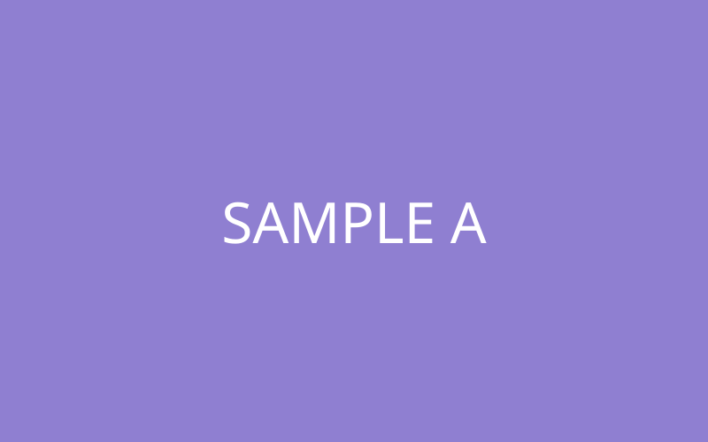
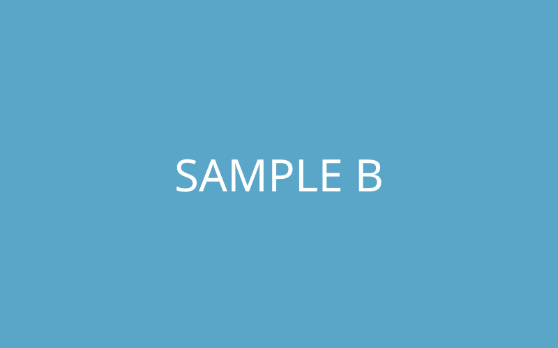
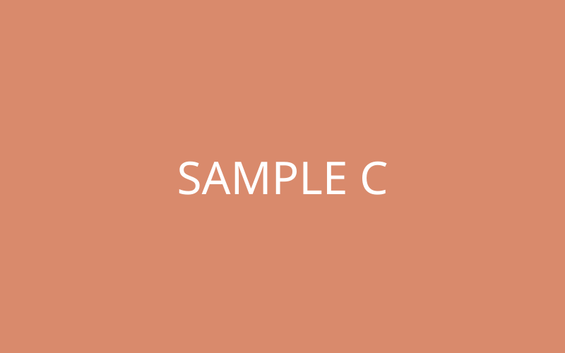
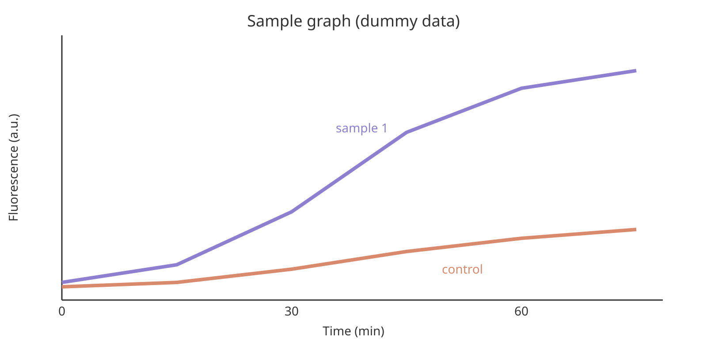

Sandbox
practice
ここは練習用ページです。自由に書き換えて試してください。
メニューにはリンクされておらず、サイト内検索にも出ません。
自分用に試したいときは、このファイルをコピーして
sandbox-自分の名前.html を作ると、ほかの人の練習と混ざりません。
my first section
こんにちは。
こんにちは。
おはよう
こんばんは
layout samples
① 画像を横に2枚並べる


② 画像を横に3枚並べる

③ 画像が左、文章が右
ここに、画像の横に置きたい文章を書きます。
画面が広いときは左右に並び、狭いとき（スマホなど）は、画像の下に文章が来ます。
④ 画像が右、文章が左
書く順番は同じ（画像が先）ですが、media-text--reverse を足すと、
画像が右に来ます。
⑤ 画像を広く表示する（グラフなど、小さい文字がある画像向け）

⑥ 説明（出典など）つきの画像
⑦ 広く表示して、説明もつける
text colors
文章の中で目立たせたい部分に、背景の色や文字の色をつけられます。 色をつけたい文字を、各見本の「書き方」（グレーの枠の中）で囲むだけです（コピーして使えます）。
① 背景の色（蛍光ペンのように）：mark に、色の名前の class をつけます。
<mark class="hl-yellow">強調したい文字</mark>
<mark class="hl-blue">強調したい文字</mark>
<mark class="hl-pink">強調したい文字</mark>
<mark class="hl-green">強調したい文字</mark>
<mark class="hl-orange">強調したい文字</mark>
<mark class="hl-purple">強調したい文字</mark>
<mark class="hl-gray">強調したい文字</mark>
② 文字そのものの色：span に、色の名前の class をつけます。特に目立たせたいときは、赤や青が分かりやすいです。
<span class="text-red">強調したい文字</span>
<span class="text-blue">強調したい文字</span>
<span class="text-green">強調したい文字</span>
<span class="text-orange">強調したい文字</span>
<span class="text-purple">強調したい文字</span>
<span class="text-gray">強調したい文字</span>
③ 重ねて使う（背景の色 ＋ 文字の色 ＋ 太字）
<mark class="hl-yellow"><strong class="text-red">強調</strong></mark>
④ 実際の文章の中での見え方
For the closed-to-open structural change, the 20% w/v PEG 8k purification method gave a low yield of only 0.8 nM, whereas the Amicon purification worked best and provided good enough yield and clarity for imaging.
使いすぎると、どこが大切か分かりにくくなります。1つの段落に、強調は1〜2か所までにするのがおすすめです。
font and size
文章の中で目立たせたい部分の、フォント（書体）と文字の大きさを変えられます。 変えたい文字を、各見本の「書き方」で囲むだけです（コピーして使えます）。 色（text colors）や太字と、重ねて使えます。
Fonts
書体を変えます。span に、書体の名前の class をつけます（どの端末にも入っている書体だけを使うので、読み込みは、遅くなりません）。
<span class="font-sans">強調したい文字</span>
<span class="font-serif">強調したい文字</span>
<span class="font-mono">強調したい文字</span>
<span class="font-rounded">強調したい文字</span>
Sizes
まわりの文字に対する割合で、大きさを変えます。span に、大きさの名前の class をつけます。
<span class="size-sm">強調したい文字</span>
<span class="size-lg">強調したい文字</span>
<span class="size-xl">強調したい文字</span>
<span class="size-2xl">強調したい文字</span>
Combining and In Context
フォント・大きさ・色・太字・背景の色は、重ねて使えます。
<span class="font-serif size-xl text-red"><strong>強調</strong></span>
実際の文章の中では、次のように見えます。 The scaffold strand was designed as 5′-ATGCCGTAAGCT-3′, and the annealed structure showed a clear single band in the gel. In contrast, the control sample gave no visible band at all.
使いすぎると、読みにくくなります。1つの段落に、フォントや大きさを変える場所は、1〜2か所までにするのがおすすめです。
image slider
複数の画像を、1枚ずつ、左右にめくって見せられます。 左右の矢印、下の点、スマホは指でスワイプ、パソコンはドラッグ（または、キーボードの ← →）でめくれます。 最後まで行くと、最初に戻ります。
Example
How to write it
めくりたい画像を、<figure> で包んで、<div class="carousel"> の中に並べます。
画像の説明（<figcaption>）は、なくても大丈夫です。
<div class="carousel" aria-label="説明">
<figure><img src="images/a.png" alt="説明"><figcaption>画像の説明</figcaption></figure>
<figure><img src="images/b.png" alt="説明"></figure>
</div>
Options
画像の縦横の比は、data-ratio="16/9" のように書くと、変えられます（書かなければ 16/10）。
比のちがう画像は、切り取られずに、枠の中に収まります。
ページに入れるときは、carousel.css（</head> の前）と
carousel.js（</body> の前）を足してください。
page links
文章の途中の言葉をリンクにして、関連する場所へジャンプできます。 リンクはオレンジ色の下線で表示されます。押してみてください。
Example
The flight rings were then purified. We tested 4 purification methods to ensure the greatest yield possible—see Step 4 testing purification for the method and results below. See also text colors (another section of this page) and References for the Design (another page).
How to write it
① 飛び先に、id をつける（半角の英数字とハイフン。ページの中で、ほかと同じ名前にしない）
<h3 class="sub-title" id="step4-purification">Step 4. Testing purification</h3>
② 文章の中の言葉を、リンクで囲む（# のあとに、①の id を書く）
<a class="jump-link" href="#step4-purification">Step 4 testing purification</a>
③ ほかのページの途中へ飛ぶときは、ページ名の後ろに #id をつけます。
<a class="jump-link" href="design.html#design-references">References for the Design</a>
飛び先は、移動したあと、一瞬だけ黄色くひかるので、どこに来たか分かります。
ページに入れるときは、text-style.css（</head> の前）を読み込んでください。
Step 4. Testing purification
ここが、上の文章からジャンプしてくる場所（飛び先）です。
見出しに id="step4-purification" がついています。
contents sidebar
このページの左にある目次が、「項目別にジャンプできる目次」の見本です。 項目を押すと、その見出しまで移動します。読んでいる項目には、色がつきます。
小見出しがある大きな項目の左の「›」を押すと、小見出しを折りたたんだり、開いたりできます。 目次の上の「⋮」からは、「Expand all」（すべて開く）と「Collapse all」（すべて閉じる）が選べます。 目次そのものは、左上の丸いボタンで、閉じたり開いたりできます。
How it is made
目次は、ページの見出しから、自動で作られます。
大見出し（<h2 class="section-title">）が目次の大きな項目、
小見出し（<h3 class="sub-title">）が、その下の小さな項目になります。
目次の中身を、自分で書く必要はありません。
How to add it to a page
ページに入れるときは、次の2行を足すだけです。
<link rel="stylesheet" href="toc.css">（</head> の前）
<script src="toc.js"></script>（</body> の前）
On a phone
画面が狭いとき（スマホなど）は、左下の「Contents」ボタンを押すと、目次が横から開きます。 項目を選ぶと、閉じて移動します。